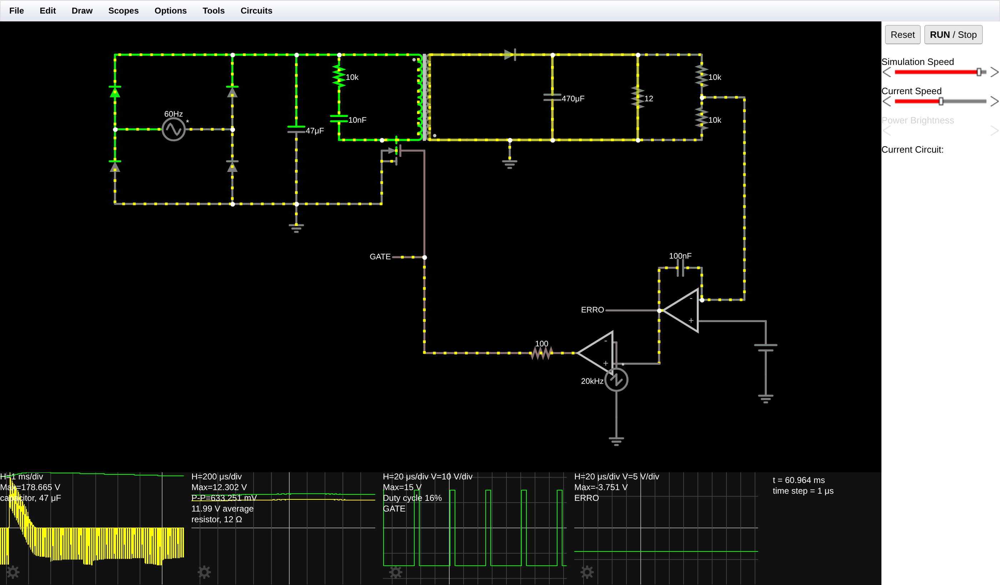
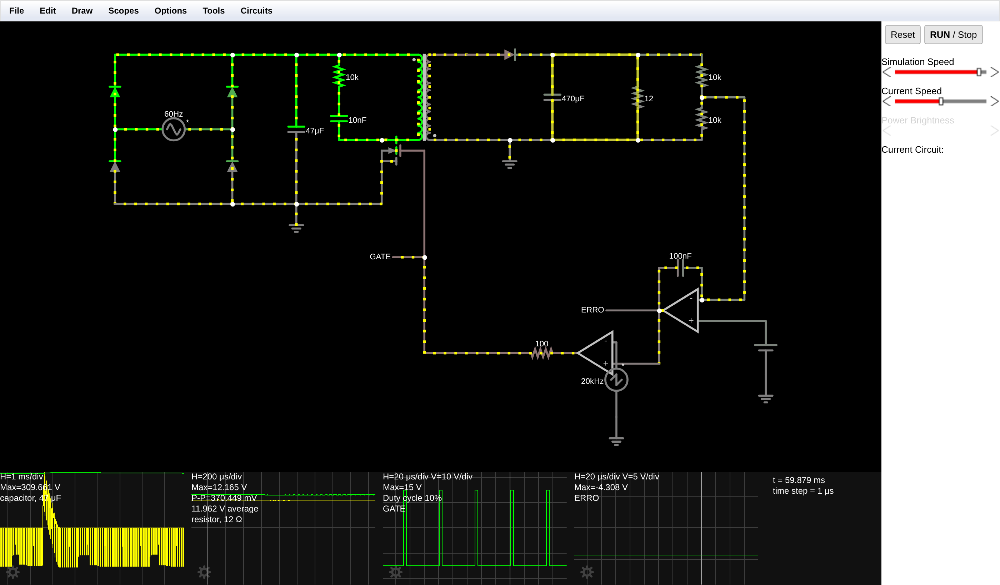
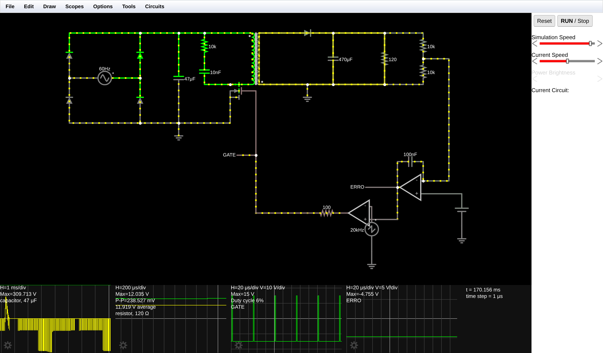
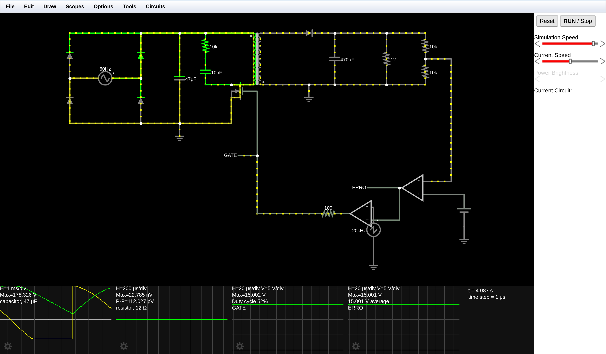

| Grandeza | Valor de projeto |
|---|---|
| Tensão de entrada (Vin) | 127 VRMS (pico 180 V) ou 220 VRMS (pico 311 V), 60 Hz |
| Tensão no barramento DC | ≈ 178 V (rede 127 V) ou ≈ 309 V (rede 220 V) |
| Tensão de saída (Vout) | 12 V DC, carga de 12 Ω → 1 A / 12 W |
| Frequência de chaveamento | 20 kHz (T = 50 µs) |
| Transformador | Lprimário = 1 mH · relação 0,1 (10:1 abaixadora) · acoplamento 0,99 · pontos invertidos |
O barramento DC é a tensão de pico da rede menos as duas quedas de diodo da ponte em série: 180 − 2×0,7 = 178,6 V e 311 − 1,4 = 309,6 V. O conversor opera em modo de condução descontínua (DCM), em que a energia transferida por ciclo vale E = ½·Lp·Ipico², e a potência de saída é:
Combinando as duas expressões, para uma potência de saída constante o produto Vbarramento · D permanece constante. É exatamente esse o mecanismo do bivolt automático: se a tensão da rede sobe, a malha de realimentação precisa reduzir a razão cíclica na mesma proporção — previsão que será verificada experimentalmente na seção 6.
| Componente | Caminho no menu Draw | Configuração |
|---|---|---|
| Fonte AC (rede) | Inputs and Sources > Add A/C Voltage Source (2-terminal) | 60 Hz · Max Voltage 180 V (ou 311 V) |
| Ponte retificadora | 4 diodos (d) em dois ramos | Modelo padrão. Os dois nós centrais recebem a rede; os extremos formam o barramento + e − |
| Capacitor de barramento | Passive Components > Add Capacitor | 47 µF, entre + e − da ponte |
| Referência do primário | Inputs and Sources > Add Ground | No terminal negativo do capacitor de barramento |
A ponte foi desenhada como dois ramos verticais de dois diodos com a fonte AC ligada entre os pontos médios. É eletricamente idêntica ao símbolo em losango e evita cruzamentos de fios, deixando os barramentos + e − como trilhos horizontais limpos.
| Componente | Caminho no menu Draw | Configuração |
|---|---|---|
| Transformador | Passive Components > Add Transformer | Primary Inductance 1 mH · Ratio 0,1 · Coupling 0,99 · polaridade invertida |
| MOSFET chaveador | Active Components > Add MOSFET (N-Channel) | Dreno no terminal inferior do primário · Source no terra do primário |
| Snubber | Resistor + capacitor em série | 10 kΩ + 10 nF, em paralelo com o primário |
A polaridade é o que define o modo flyback. Com os pontos invertidos, durante a condução do MOSFET a tensão induzida no secundário tem polaridade que bloqueia o diodo de saída: a energia fica armazenada no entreferro do transformador em vez de atravessar para a carga. Só quando a chave abre é que a polaridade se inverte, o diodo conduz e a energia é entregue. Um transformador flyback é, a rigor, um indutor acoplado, não um transformador convencional.
A tensão refletida do secundário para o primário durante o bloqueio vale Vout/n = 12/0,1 = 120 V. Somada ao barramento, o MOSFET precisa suportar cerca de 298 V na rede 127 V e 430 V na rede 220 V — por isso o snubber RC é obrigatório: ele absorve o pico adicional gerado pela indutância de dispersão (o acoplamento é 0,99, não 1).
| Componente | Caminho no menu Draw | Configuração |
|---|---|---|
| Diodo rápido | Passive Components > Add Diode | Anodo no terminal superior do secundário, catodo para a carga |
| Capacitor de saída | Passive Components > Add Capacitor | 470 µF, entre o catodo do diodo e o terminal inferior do secundário |
| Terra do secundário | Inputs and Sources > Add Ground | No terminal inferior do secundário |
| Carga | Passive Components > Add Resistor | 12 Ω (1 A nominal) · 120 Ω no ensaio de carga leve |
| Componente | Caminho no menu Draw | Configuração |
|---|---|---|
| Gerador de rampa | Inputs and Sources > Add Voltage Source | Waveform Sawtooth · 20 kHz · Max Voltage 5 V (rampa de −5 V a +5 V) · negativo no terra |
| Divisor de amostragem | Dois resistores de 10 kΩ | Na saída de 12 V, fornecendo 6 V |
| Amplificador de erro | Active Components > Add Op-Amp | Divisor (6 V) na entrada inversora · referência DC de 6 V na não-inversora |
| Referência | Add Voltage Source (DC) | 6 V fixos |
| Comparador PWM | Segundo Op-Amp | Sinal de erro na não-inversora · rampa de 20 kHz na inversora |
| Acoplamento ao gate | Resistor | 100 Ω entre a saída do comparador e o Gate do MOSFET |
Na fonte real esse sinal cruzaria a barreira de isolação por um optoacoplador (tipicamente 4N25 + TL431); no simulador, a ligação direta entre o terra do secundário e o do primário representa o acoplador ideal. Para facilitar a leitura, os nós do Gate e do sinal de erro foram identificados com rótulos (labeled nodes) e levados a osciloscópios próprios.
Montado estritamente com os valores de fábrica do simulador, o circuito não regula. A investigação identificou que o problema está inteiramente na malha de controle — e que as duas correções necessárias são funções presentes em qualquer CI controlador de fonte chaveada. Estão documentadas aqui porque alteram parâmetros que o roteiro não especifica. Todos os componentes e valores do roteiro foram mantidos, MOSFET incluído.
Um amp-op sem rede de realimentação é um comparador, não um amplificador de erro: com ganho de 105 sua saída vai imediatamente a ±15 V. Como a rampa de comparação vai apenas de −5 V a +5 V, um erro de +15 V deixa o comparador PWM permanentemente em nível alto — razão cíclica de 100 %.
E aqui está a armadilha específica do flyback: com 100 % de razão cíclica a chave nunca abre, o diodo de saída nunca conduz e a fonte não entrega absolutamente nada. A saída fica em zero, o erro continua saturado e o circuito trava nesse estado. O Experimento 4 (seção 6.5) comprova: saída de 22,8 nV — zero, para todos os efeitos — com o sinal de erro parado em +15,0 V.
Correção: limitar a excursão de saída do amplificador de erro para a faixa 0 a −5 V (campo Output Range do amp-op). Isso mantém o erro dentro da janela da rampa e, de quebra, implementa o limite de razão cíclica máxima de 50 % — recurso obrigatório em todo CI controlador de flyback real, justamente para impedir a saturação do núcleo.
Mesmo com a faixa limitada, o ganho de 105 amplifica a própria ondulação da saída e joga o erro de um limite ao outro a cada ciclo: a fonte passa a funcionar em rajadas, com ondulação de 1,30 V. A correção é um capacitor de 100 nF entre a saída e a entrada inversora do amplificador de erro, transformando-o em integrador — é a compensação tipo I, a mais simples das redes usadas em fontes reais. Com ela a ondulação caiu para 335 mV e o PWM ficou uniforme.
Antes de fechar a montagem, a chave foi verificada contra a corrente que o conversor realmente exige. O MOSFET padrão do Falstad (Vth = 1,5 V, β = 0,02 A/V²), acionado com os 15 V de saída do comparador, apresenta:
| Parâmetro | Cálculo | Valor |
|---|---|---|
| Resistência de condução RDS(on) | 1 / [β·(VGS − Vth)] = 1 / (0,02 × 13,5) | 3,70 Ω |
| Corrente de saturação ID(sat) | (β/2)·(VGS − Vth)² = 0,01 × 13,5² | 1,82 A |
| Corrente de pico exigida no primário | √(2·Pout / (Lp·fs)) = √(2×12 / (10−3×2×104)) | 1,10 A |
| Perda por condução | Irms²·RDS(on), com Irms = Ipico·√(D/3) = 0,254 A | 0,24 W (2 % de Pout) |
A corrente de pico fica abaixo da saturação, com margem de 1,65 vez, e a perda de condução é aceitável. O MOSFET foi portanto mantido nos valores de fábrica, e a simulação confirmou que a fonte regula normalmente com ele. A única ressalva é a ondulação de saída: substituindo-o por um MOSFET de potência realista (β = 5 A/V², RDS(on) ≈ 24 mΩ, equivalente a um IRFZ44N), a ondulação cai pela metade — medição apresentada na seção 6.6.
Vale observar que durante a partida, quando a malha trabalha no limite de 50 % de razão cíclica, a corrente exigida chegaria a Vbarramento·D·T/Lp = 4,45 A, acima da saturação. O MOSFET entra em saturação e limita a corrente — comportamento equivalente ao da proteção de corrente de pico que os CIs controladores reais implementam ciclo a ciclo.

| Etapa | PWM no gate | MOSFET | Diodo do secundário | Transformador | Capacitor de saída | Carga alimentada por |
|---|---|---|---|---|---|---|
| 1 — Acumulação (duração D·T) | Nível alto (+15 V) | Conduz | Bloqueado (polaridade invertida) | Corrente no primário cresce linearmente; energia armazenada no entreferro | Descarrega | Somente o capacitor |
| 2 — Transferência (duração tdesmag) | Nível baixo (−15 V) | Bloqueado | Conduz | Campo colapsa; a energia sai pelo secundário e a corrente decresce até zero | Recarrega | Secundário + capacitor |
| 3 — Tempo morto (resto do período) | Nível baixo | Bloqueado | Bloqueado | Energia esgotada: iP = iS = 0 (modo descontínuo) | Descarrega | Somente o capacitor |
Fonte AC com Max Voltage = 180 V, carga de 12 Ω. O barramento estabilizou em 178,665 V, exatamente o previsto (180 V de pico menos as duas quedas de diodo). A saída estabilizou em 11,990 V, com o sinal de erro parado em −3,751 V e razão cíclica de 16 %.

| Tensão da rede (RMS) | Tensão de pico no Falstad | Tensão no barramento DC | Largura de pulso (observação) | Sinal de erro | Tensão de saída medida |
|---|---|---|---|---|---|
| 127 V AC | 180 V | 178,665 V (previsto ~178 V) | Razão cíclica 16 % — pulsos de ≈ 8 µs em 50 µs | −3,751 V | 11,990 V (ondulação 633 mV) |
| 220 V AC | 311 V | 309,661 V (previsto ~309 V) | Razão cíclica 10 % — pulsos estreitaram para ≈ 5 µs | −4,308 V | 11,962 V (ondulação 370 mV) |
Verificando a previsão teórica da seção 2 (produto Vbarramento·D constante): em 127 V temos 172 × 0,16 = 27,5 e em 220 V temos 300 × 0,10 = 30,0 — uma diferença de apenas 9 %, consistente com o pequeno aumento de perdas de comutação na tensão mais alta. A fonte entrega 999 mA / 11,98 W em ambas as redes.

| Condição | Corrente de saída | Tensão de saída | Ondulação | Sinal de erro | Razão cíclica |
|---|---|---|---|---|---|
| 220 V · carga nominal (12 Ω) | 997 mA | 11,962 V | 370 mV | −4,308 V | 10 % |
| 220 V · carga leve (120 Ω) | 99 mA | 11,919 V | 239 mV | −4,755 V | 6 % |
| Regulação de carga: −0,36 % para uma variação de 10:1 na corrente de saída. Regulação de linha: −0,23 % para uma variação de +73 % na tensão da rede. | |||||

Para quantificar o efeito da resistência de condução da chave, o circuito foi simulado também com um MOSFET de potência realista (β = 5 A/V², RDS(on) ≈ 24 mΩ contra os 3,70 Ω do componente padrão), mantendo tudo o mais idêntico, em 127 V e carga nominal:
| MOSFET | RDS(on) | Barramento DC | Tensão de saída | Ondulação | Razão cíclica |
|---|---|---|---|---|---|
| Padrão do Falstad (β = 0,02) | 3,70 Ω | @@BUS1@@ | @@VO1@@ | @@RIP1@@ | @@D1@@ |
| De potência (β = 5) | 24 mΩ | @@BUS5@@ | @@VO5@@ | @@RIP5@@ | @@D5@@ |
A tensão média regulada praticamente não muda — a malha de realimentação compensa a perda a mais da chave aumentando levemente a razão cíclica. O ganho está na ondulação, que cai pela metade: com a chave de menor resistência, a corrente de pico no primário é atingida de forma mais repetível a cada ciclo, e o capacitor de saída recebe pacotes de energia mais uniformes. Como o roteiro não especifica os parâmetros do MOSFET, o circuito entregue mantém o componente padrão.
Os pulsos estreitaram — de 16 % para 10 % — e sim, a saída permaneceu regulada: passou de 11,990 V para 11,962 V, uma variação de apenas −0,23 % para um aumento de 73 % na tensão da rede.
O mecanismo é o seguinte. Com o barramento em 309 V em vez de 178 V, a corrente no primário cresce 1,7 vez mais rápido durante a condução (di/dt = Vbarramento/Lp). Se a largura do pulso fosse mantida, a corrente de pico — e portanto a energia armazenada por ciclo, ½·L·I² — aumentaria, e a saída dispararia. A malha impede isso: a tensão de saída tende a subir, o divisor entrega mais de 6 V à entrada inversora, o amplificador de erro baixa sua saída (de −3,751 V para −4,308 V) e o comparador, encontrando a rampa mais cedo, encurta o pulso na medida exata para manter constante a corrente de pico.
Essa é precisamente a definição de fonte bivolt automática: não há chave seletora nem relé; a regulação por largura de pulso absorve sozinha a variação da rede. A mesma malha explica por que fontes chaveadas aceitam faixas largas de entrada (tipicamente 90–264 VAC), enquanto uma fonte linear com transformador de 60 Hz precisa de seletor mecânico ou de dois enrolamentos.
Verificação quantitativa. Como mostrado na seção 6.3, o produto Vbarramento·D manteve-se praticamente constante (27,5 contra 30,0), que é exatamente o que a teoria do flyback em modo descontínuo prevê para potência de saída constante.
Reduzindo a carga de 1 A para 100 mA, a potência exigida cai dez vezes. A malha respondeu levando o sinal de erro de −4,308 V para −4,755 V, estreitando a razão cíclica de 10 % para 6 %. A saída ficou em 11,919 V: uma variação de apenas −0,36 % apesar da redução de 10:1 na corrente. A malha de fato impede que a tensão suba — a saída sequer ultrapassou os 12 V.
A relação entre a potência e a largura do pulso não é linear, e sim quadrática. No modo de condução descontínua a energia transferida por ciclo vale ½·Lp·Ipico², com Ipico = Vbarramento·D·T/Lp, de modo que a potência cresce com D². Reduzir a potência em dez vezes exige dividir a razão cíclica por √10 ≈ 3,2 — compatível com o que foi medido, lembrando que a leitura do osciloscópio inclui o atraso de comutação discutido abaixo.
A ondulação de saída também caiu, de 370 mV para 239 mV: com menos corrente drenada, o capacitor de 470 µF se descarrega muito mais lentamente entre os pulsos.
Nota de medição. Comparando as três condições, a razão cíclica lida no osciloscópio fica sistematicamente cerca de 3,5 pontos percentuais acima do valor que o sinal de erro prevê pela relação D = (Verro + 5)/10: 16 % contra 12,5 % em 127 V, 10 % contra 6,9 % em 220 V e 6 % contra 2,5 % em carga leve. O desvio é praticamente constante e corresponde a um atraso fixo de ≈ 1,8 µs no caminho comparador → resistor de gate → MOSFET, coerente com a largura de banda finita do amp-op. Em um controlador real esse atraso é justamente o que estabelece a largura mínima de pulso do CI.
Porque a corrente atravessa sempre dois diodos em série da ponte (um no ramo positivo e outro no ramo de retorno). Com queda direta de ≈ 0,7 V cada, o barramento fica em Vpico − 1,4 V. As medições confirmam o modelo com precisão notável: 178,665 V medidos contra 178,6 V previstos na rede de 127 V, e 309,661 V contra 309,6 V previstos na rede de 220 V — erro inferior a 0,1 V nos dois casos.
Além disso, o capacitor de 47 µF não mantém a tensão perfeitamente constante: entre dois picos consecutivos da rede retificada (8,33 ms em 60 Hz) ele alimenta sozinho a fonte, e sua tensão decai. É a ondulação de 120 Hz bem visível no osciloscópio do barramento nas Figuras 1 a 3, que faz o valor médio ficar abaixo do pico medido.
Os links abrem a fonte já montada e em execução, com os quatro osciloscópios configurados. Para repetir os experimentos, basta clicar com o botão direito na fonte AC e alterar o Max Voltage, ou no resistor de carga e alterar a resistência.
A fonte chaveada flyback foi montada com os cinco estágios completos e opera de forma estável nas duas redes. As medições confirmam quantitativamente o comportamento previsto: barramento de 178,665 V em 127 V e 309,661 V em 220 V, ambos a menos de 0,1 V do modelo que desconta as duas quedas de diodo da ponte.
A operação bivolt automática foi comprovada: aumentando a rede em 73 %, a malha de realimentação estreitou os pulsos de 16 % para 10 % e a saída variou apenas −0,23 %. O teste de carga mostrou regulação de −0,36 % para uma variação de 10:1 na corrente. Em ambos os casos o sinal de erro, monitorado em um osciloscópio próprio, moveu-se na direção correta dentro da janela da rampa — tornando visível o funcionamento da malha, que normalmente é a parte mais abstrata do circuito.
O trabalho também mostrou que a montagem literal do roteiro não regula. Um amp-op sem rede de realimentação é um comparador: sua saída satura em +15 V, muito fora da janela de −5 V a +5 V da rampa, e o PWM trava em 100 %. Como o flyback só transfere energia durante o bloqueio da chave, 100 % de razão cíclica significa potência nula — e a fonte fica presa nesse estado, com 22,8 nV na saída. As duas correções aplicadas — limitar a excursão do amplificador de erro, o que de quebra implementa o limite de razão cíclica máxima, e acrescentar o capacitor de compensação — não são artifícios de simulação: são exatamente as funções que qualquer CI controlador de fonte chaveada implementa internamente. Todos os componentes e valores especificados no roteiro, MOSFET incluído, foram mantidos.
Texto importável pelo Falstad (File > Import from Text):